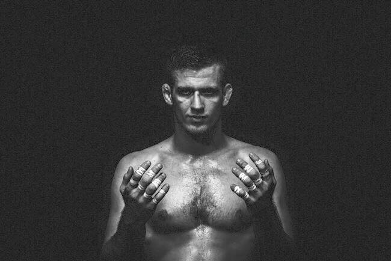

Hello!
Hi! I'm Steve and I'm from Korea and this is my first year in LBSS.
I'm more of a mathematic guy with calculators and rulers in the bag than a English guy with dictionaries and books in the bag. I guess since I usually get high marks on math and science, those are my favorites.
I love to train Brazilian Jiu Jitsu which I do two hours every single day if my joints are alright, especially my knees. This sports is really cool that allows a 150lb teen to dominate 210lb adults easily.
